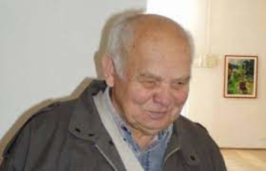

ВЕЛИКЕ МИСТЕЦТВО МАЛОГО КРАЮ: АНТОН ШЕПА І ІВАН ІЛЬКО
Якщо ім’я митця не актуалізується, то з ходою часу воно зникає, щонайменше на певний період. Такі випадки трапляються навіть зі знаменитими ще за життя творцями. З появою нових текстів, спогадів, ім’я художника повертається з тимчасового або тривалого забуття.
Живописна спадщина Антона Шепи
Квітень 2016 року, в Закарпатському художньому музеї відкрилася виставка пам’яті живописця – «In memoriam», значного представника третього покоління Закарпатської школи живопису. Цього ж року в Києві вийшов з друку альбом репродукцій (більше 100) «Барвиста феєрія Антона Шепи» і матеріалом про життя і творчість художника. Обидві події були присвячені до 88-річчя з Дня народження митця.
Антон Олексійович
Як і інші, самобутні, неповторні у своїй творчості закарпатські живописці, любив свій край і його казково чудове довкілля. Народжений 17 квітня 1928 року у багатодітній сім’ї, в селі Підгоряни на Мукачівщині (нині – район міста). У віці 4-х років залишився без матері. Нелегке дитинство, важкими видалися і юнацькі роки.
В 1948 році мав намір поповнити лави українських філологів Львівського університету, не вдалося. Вступити до Львівського інституту декоративного та прикладного мистецтва було важкувато, але він здолав цю перешкоду попри те, що на одне місце претендувало 5 абітурієнтів. Студіював різні науки на відділенні монументального живопису, серед викладачів – знаний художник і педагог Роман Сельський. У ці ж роки навчалися у майбутньому знані художники, зокрема – Карло Звіринський (1923 – 1997), Володимир Патик (1926 – 2016).
Значну частину життя перебував у Києві
В 2004 році повернувся в Закарпаття, 2008 рік - був відзначений званням Заслуженого художника України, як це трапляється, з великим запізненням… В 2014 – лауреат обласної премії Й. Бокшая та А. Ерделі у галузі живопису, того ж року 4 липня відійшов у засвіти… Своєрідний живописець, значна постать в історії Закарпатської школи малярства.
Іван Ілько…
Народжений у селі Дулово на Тячівщині, 4 березня 1938 року. З дитинства привчений до праці. Що таке постоли тямив не з розповідей, їх довелося носити.
З труднощами буття познайомився дуже рано, юнацькі роки на його долю випали складні, знав, що таке бути голодним… Мав велике бажання вчитися. В 1946 році відкрилися двері Ужгородського державного художньо-промислового училища, перший директор – Адальберт Ерделі. 1952 рік, в 14 літньому віці Іван Ілько став студентом цього навчального закладу.
Суттєва деталь
сприймання контура або навпаки. Йосип Бокшай володів контуром, а письмо Антона Шепи побудоване на контурі широкого мазка… Писати з натури складне завдання, треба швидко схоплювати той стан який бачиш, створити роботу за 2-3 години, мінливість освітлення впливає, є й інші причини. Широкий мазок, багатобарвність плям, безмежна плановість, - застосовувалися Шепою у письмі.
- На фото - Антон Шепа (Заслужений художник України) та його роботи:
- "Осінь"
- "Золотиста осінь"
- "Явлення" 
.jpg)
.jpg)
.jpg)
- На фото - Іван Ілько (Народний художник України) та його картини:
- "Синевирська Поляна"
- "Святвечір. Колядники"
- "Весна. Чорна ріка"
- Логотип (емблема) ЛЕЛЕГ-4
.jpg)
.jpg)
.jpg)
.jpg)
.jpg)